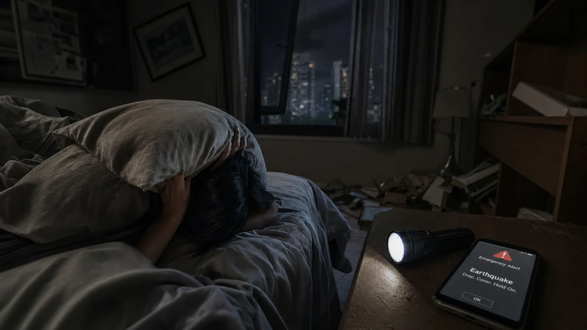

Deprem Anında Yataktaysanız Ne Yapmalısınız?
Türkiye'deki büyük depremlerin önemli bir kısmı gece saatlerinde oldu: 1999 Gölcük 03:02, 2023 Kahramanmaraş 04:17. Gece uyurken deprem başlarsa en kritik ilk 15 saniyede ne yaparsınız?
Yatakta Mı Kalın, Kalkın mı?
Çoğu deprem güvenlik uzmanının önerisi: Yatakta kalın, döşeğin altına inin ve başınızı yastıkla koruyun. Nedeni: gece karanlıkta ayağa kalkmak düşmeye, kırılmış cam ve dökülen eşyalara basılmaya yol açar. Türkiye'de deprem yaralanmalarının önemli bir kısmı kaçmaya çalışırken gerçekleşir. İstisna: Yatağınız ağır bir dolabın, kirişin veya cam önündeyse — o zaman doğrudan çök-kapan-tutun pozisyonuna geçin.
Yatağınızı Konumlandırın
Uyumadan önce yapabileceğiniz: Yatağı duvara yakın ama büyük pencereden uzağa yerleştirin. Tavan üzerinde avize veya raf varsa yatağı altına koymayın. Yatağın yanına bıçaksız ayakkabı, el feneri, su koyun (deprem çantası yanında değilse). Telefonu başucunda şarjlı tutun.
Karanlıkta Tahliye Nasıl Yapılır?
Sarsıntı bitince: 1. Telefon fenerini açın. 2. Ayakkabı giyin (kirılmış cam riski). 3. Elektrik anahtarına dokunmayın — gaz kaçağı varsa kıvılcım yangın çıkarır. 4. Duman yoksa kapıyı açmadan önce elinizle dokunun (sıcaksa açmayın). 5. Merdiveni duvara tutunarak inin. 6. Asansör kesinlikle hayır.
Çocuklar İçin Özel Önlemler
Çocuk odasını düzenlerken: yatağı büyük pencereden uzak tutun, dökülebilecek kitaplık veya dolap olmasın, gece lambası pilli veya kendi kendine açılan modelde olsun. Çocuklara uyurken deprem olursa yatakta kalıp yastıkla baş koruması yapmaları gerektiğini öğretin. Çocuklarla deprem hazırlığı için ayrıntılı rehberimize bakın.
Gece Deprem Çantası Hazırlığı
Başucunuzda bulundurmanız gerekenler: El feneri (pilli veya krank), ayakkabı (bıçaksız spor ayakkabı ideal), su (küçük şişe), telefon şarjlı, düdük (enkaz altında kurtarıcıları çekmek için). Gece deprem kaçınılmazın kaçınılmazı; hazırlıklı uyuyanlar panik yaşamaz.